Solutions Bio-Signal Emulator
Bio-Signal Emulator
A whole hospital, recreated on a single small desktop computer. An emulator for testing remote patient monitoring systems at operating scale before they go onto a real ward.
- Thousands of virtual patients wear ECG and SpO₂ patches and move between wards and exam rooms
- Virtual BLE gateways on every floor send the signals to the collection server every 200 ms
- Admissions and discharges, patch changes, gateway failures, network outages and arrhythmia episodes
- Built-in EMRs of 20 virtual institutions, so commercial EMR integration is tested too
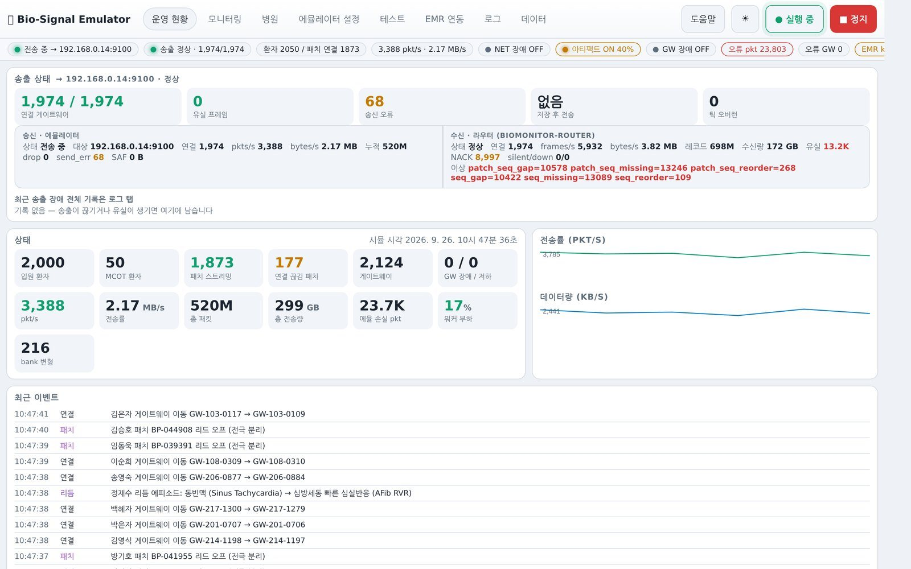
Built for
- Remote-monitoring and collection-server teams
- Central-monitor and viewer teams
- Hospital IT and EMR integration
- Medical-device test preparation
Screen demo
Key screens
In place of a live demo, 13 real screens walk through the main features. Use the previous and next buttons, the arrow keys or the strip below.
-
01 / 13
Operations dashboard
What the emulator is sending right now, and how much, on one screen.
- Transmission status, router connections, packet and data rates
- Inpatient and outpatient counts, patch and gateway status
- Network and gateway fault scenarios, artifact scenarios
- Reception status reported by the router, live event log
-
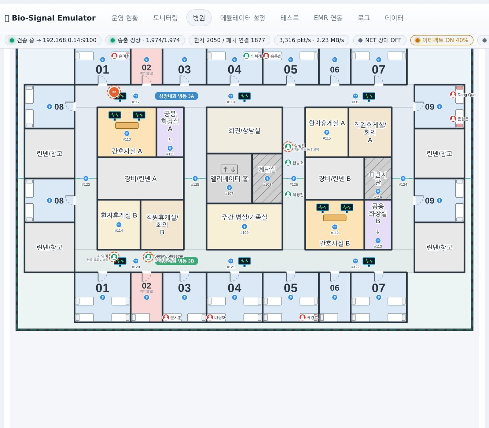
02 / 13
Hospital floor plans
Hospital size is derived from the number of patients to monitor: 2,000 patients means about 2,500 beds in three 20-storey buildings.
- Ten floor-plan archetypes chosen automatically by bed count
- Room area, bed spacing and corridor width checked against Korean medical and building codes
- Gateway coverage and dead zones, patients in transit
- Floor plans exported as metric JSON for viewers to reuse
-
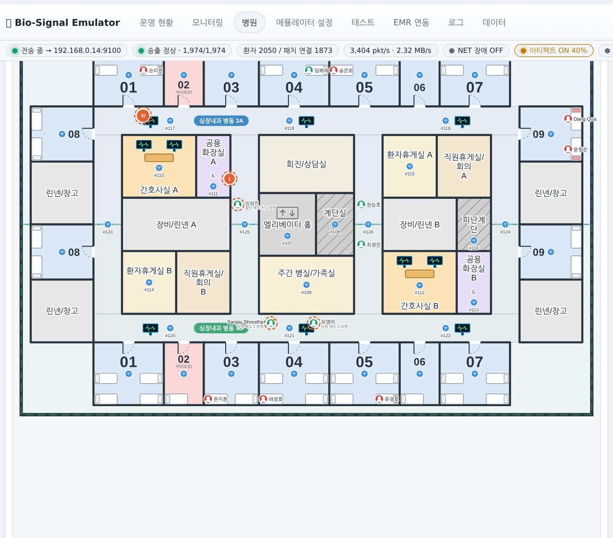
03 / 13
Room zoom
Bed positions and orientation, room numbers and the ceiling-mounted gateway, drawn inside each room.
- Click to zoom and drag to pan; pick a floor from the section view
- Bed occupancy, with lead-off and no-signal highlighted
-
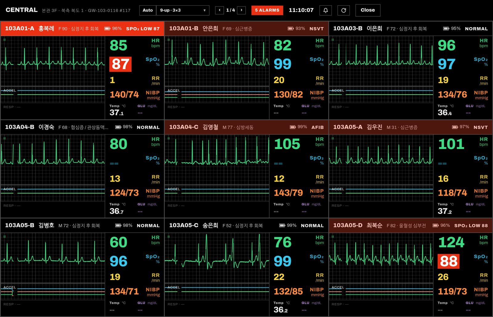
04 / 13
Central station
Clicking a gateway on the plan opens the central monitor for the patients connected to it.
- Waveforms: ECG II · Pleth · Resp
- Numerics: HR · SpO₂ · RR · NIBP · Temp · GLU with alarm limits
- Alarms coloured by priority: red for VFib, VT…; yellow for lead-off, AFib…
- Grids from 2×1 to 6×8
-
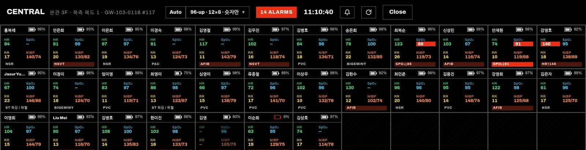
05 / 13
Numeric board
A numerics-only board for a whole ward at once, up to 16×10 (160 beds).
-
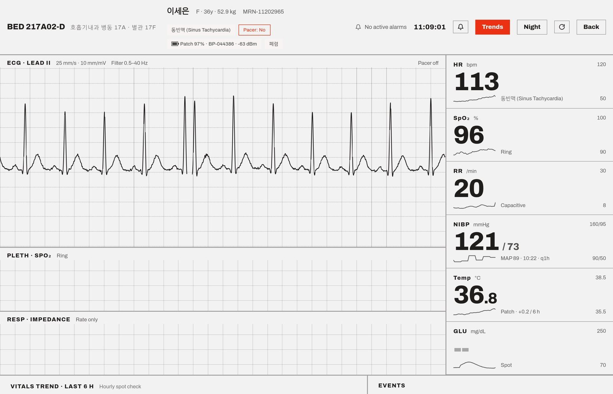
06 / 13
Bedside viewer
Clicking a central-station tile opens that patient's bedside monitor.
- Standard 25 mm/s · 10 mm/mV
- Alarm limits, 6-hour sparklines, trend table and patient events
- Light and night modes
-
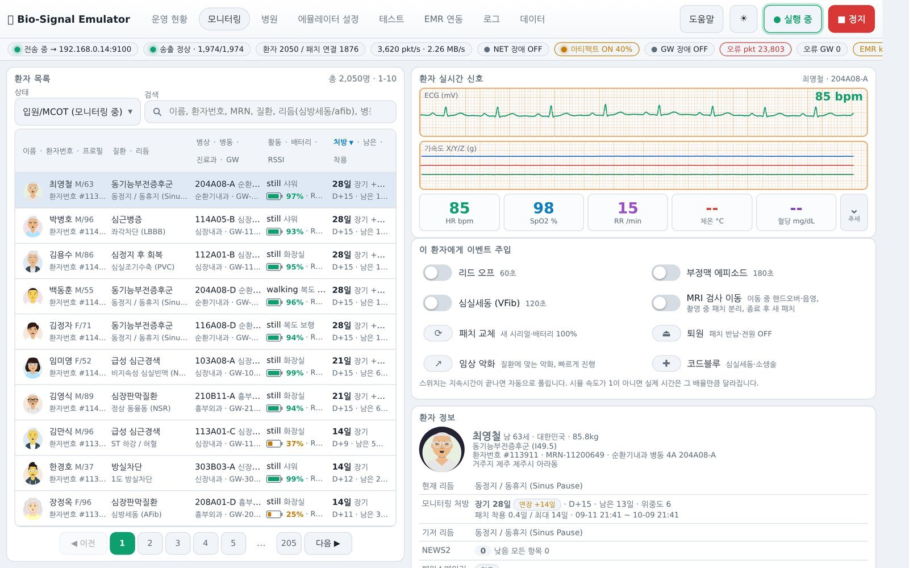
07 / 13
Patient monitoring
Pick a patient from the list to see live ECG, numerics and records together.
- Monitoring orders: prescribed days, D+n, time left, patch wear days
- Switches to inject rhythms, episodes and lead-off
- NEWS2 early-warning score
- Admission record, exam schedule, movement and patch-change history
-
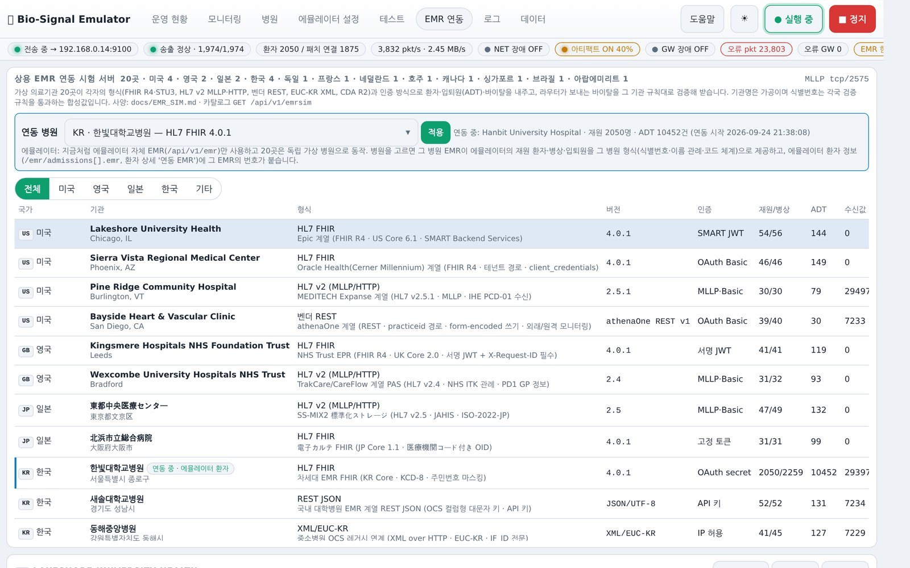
08 / 13
EMR integration testing
20 virtual institutions are built in so commercial EMR integration can be tested in advance.
- US, UK, Japan, Korea and more: FHIR R4/STU3, HL7 v2, CDA R2, REST, EUC-KR XML
- Ten authentication methods; synthetic IDs that pass each country's check digits
- Per-site self-test, sample requests, fault injection and request logs
-
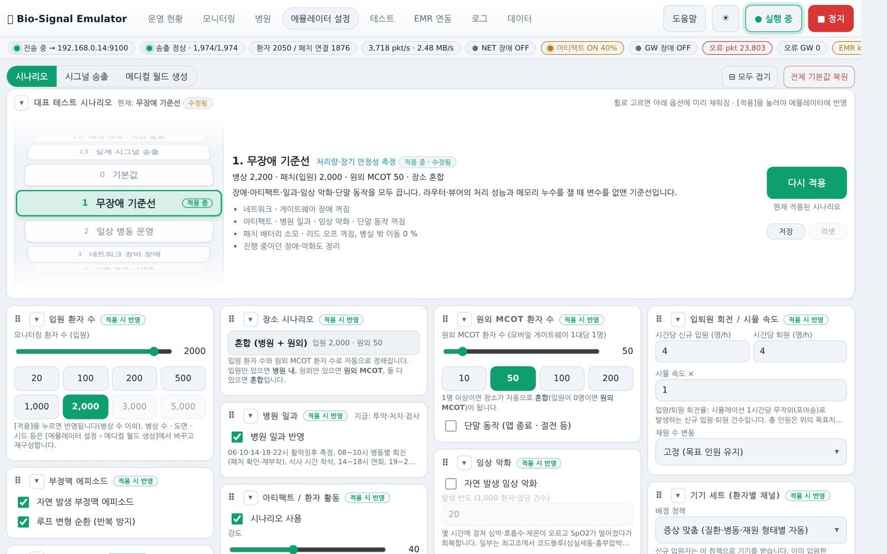
09 / 13
Scenario presets
Fourteen representative scenarios, applied in one step.
- Fault-free baseline, daily ward routine, network failures, power outage and UPS
- Gateway replacement, motion artifacts, multiple code blues, 2.4 GHz interference
- Individual events injected at set times by trigger or script
- Every setting change is logged and can be rolled back per run
-
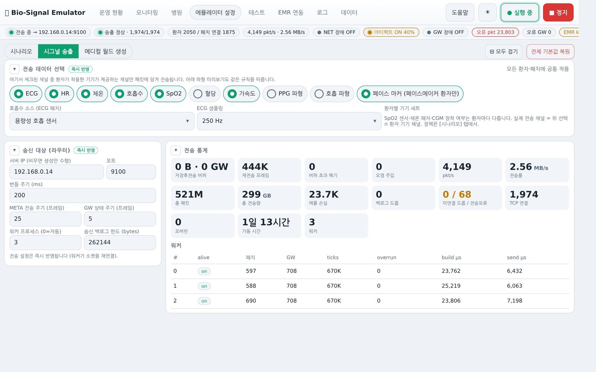
10 / 13
Signal transmission
Set the router address and channels, and switch on test drills.
- Store-and-forward, corrupted frames, ground-truth capture
- Upload recorded ECG files (ATF/CSV) and transmit them as-is
-
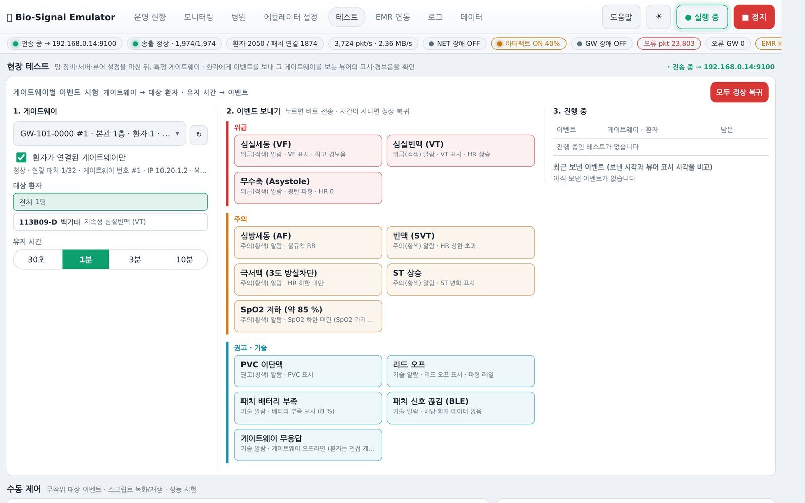
11 / 13
Field test
After the network, devices, server and viewers are installed, send events to a chosen gateway or patient and check the display and alarm tones on site.
- 13 event types in three priorities
- Critical: VFib, VT, asystole / Warning: AFib, SVT, SpO₂ drop and more
- Each event holds for a set time, then returns to normal
-
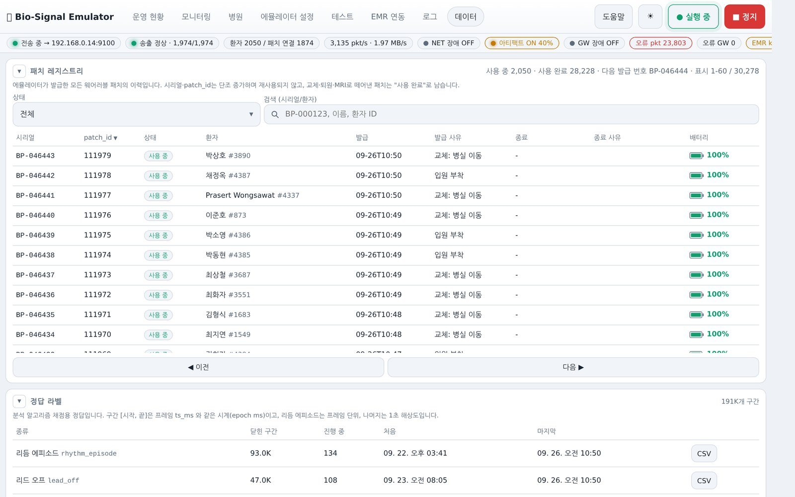
12 / 13
Data and logs
A registry of every patch issued, and the test data around it.
- Serials and patch IDs are never reused; issue and end times and reasons are kept
- Ground-truth label summaries, settings history, SQLite query console
-
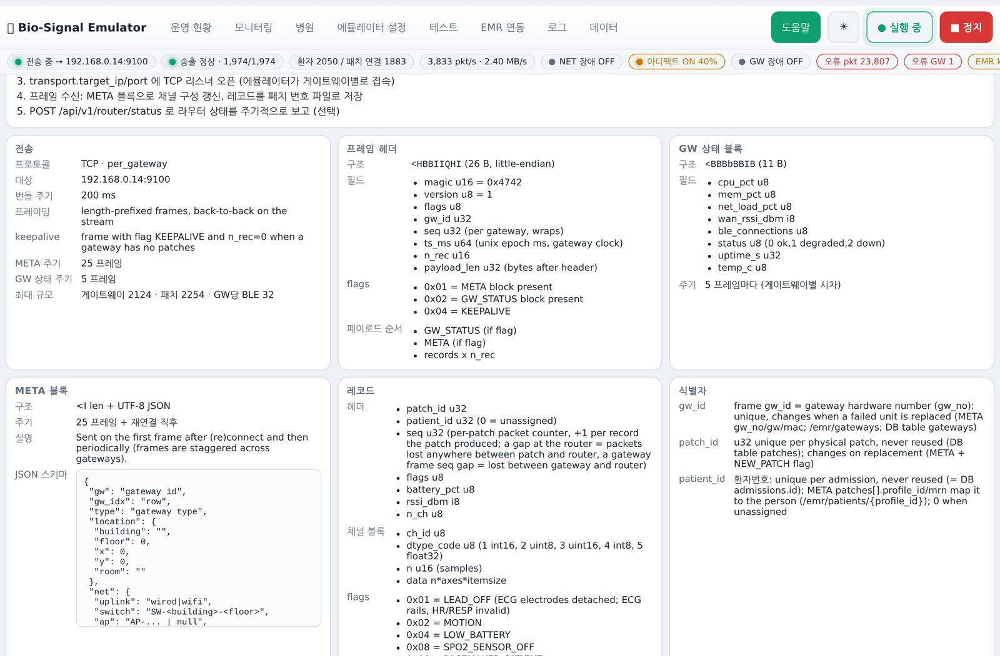
13 / 13
Protocol
An entry-point API describes the protocol, channels, endpoints and current settings in machine-readable form; a router can start receiving from that document alone.
- 26 B frame header, 16 B records plus channels, CRC-32 trailer
- Ten channels, including ECG 250/500 Hz, PPG 100 Hz and acceleration 50 Hz
Measured
Operating-scale results
Measured on the production unit: one small desktop computer (4 cores, 16 GB), 2026-09-26. About 13% load per 200 ms cycle, zero cycle overruns.
Specifications
Key specifications
| Rhythms | 27, including NSR, brady/tachycardia, AF/AFL, PVC/PAC, VT/SVT, 1st–3rd degree AVB, bundle branch blocks, STEMI/ischaemia, pacing and malfunction, VFib |
|---|---|
| Physiology | Coupled respiration–RR–ECG amplitude–PPG, circadian and multi-day drift, electrode detach/attach transients |
| Patients | 10,000 profiles, 24 diagnoses, comorbidities and allergies, implanted devices in about 6% |
| Devices | ECG patch, temperature patch, SpO₂ (fingertip, ring, wrist), CGM, assigned by symptoms |
| Patches | 15.5-day battery, up to 14 days of wear, 3–14 day orders by acuity, new number on replacement |
| Transport | TCP per gateway, 200 ms frames, CRC-32, NACK retransmission, store-and-forward |
| Validation | Ground-truth capture and comparison, strict receiver, 10 corrupted-frame types, connection-storm and half-open drills |
| EMR | 20 virtual institutions: FHIR R4/STU3, HL7 v2.3–2.5.1, CDA R2, REST, EUC-KR XML |
| Hardware | One small desktop computer (4 cores, 16 GB class; Linux or macOS); Python, FastAPI, SQLite |
| Install | Release package and install script to a systemd service; optional kiosk mode |
Talk to us
Let's review what adopting this solution would cover.